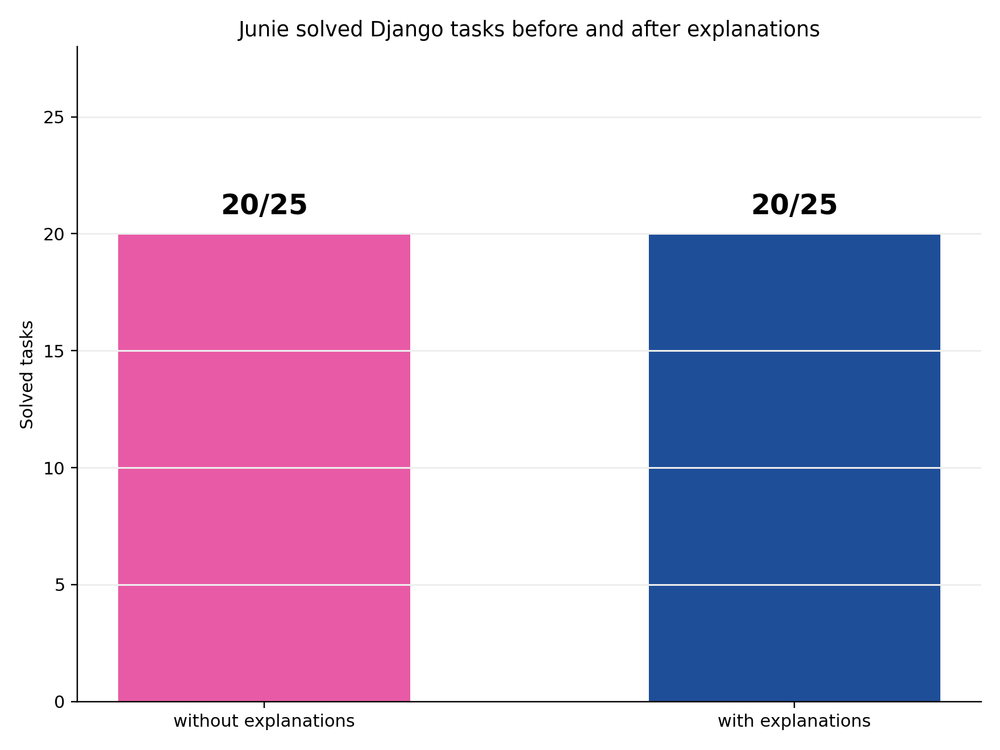
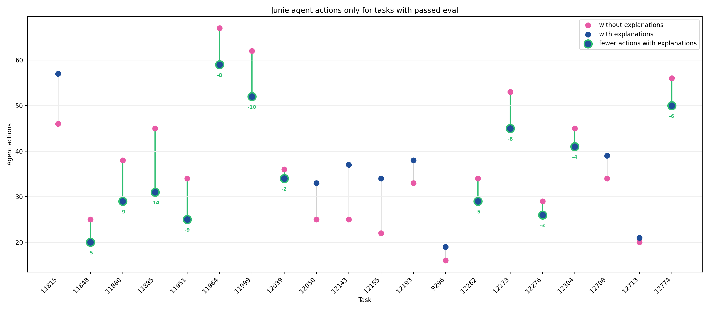

Explainable AI Code Generation Assistant
Author: Iuliia Liutova
Supervisor: Alexander Avdiushenko
Neapolis University Paphos
Problem
- LLMs write code, but do not explain decisions clearly
- No mapping between summary and code
Goal
Build a code assistant that generates code and explanations aligned with the code.

High-level architecture
Code with Explanations
SWE-bench Verified Mini Dataset: Django subset
- 25 real bug-fix tasks from Django repository
- Input: starting commit, GitHub issue text
- Correctness check: existing tests, test patch
- Is used for code generation system's performance evaluation, including AI agents
Evaluation Plan
Explanations: Junie gemini-3.1-flash-lite-preview
Code generation: Junie gemini-3-flash-preview
- Run system to compose code explanations on files from gold patch and 10 random files
- Insert explanations as comments
- Run each Django task twice: baseline repo and repo with inserted explanations
- Check correctness with the test patch and existing regression tests
Results

Solved Django tasks before and after adding explanations.
Results

Agent action counts on Django tasks with passed evaluation. With explanations agent on 12/20 (60%) tasks did fewer number of actions.
Summary
- Built a plugin for code generation with aligned explanations
- Prepared an evaluation setup using SWE-bench Verified Mini subset
- On passed checks, explanations reduced Junie's actions in 12/20 cases
Next: extend experiments to more repositories and agents